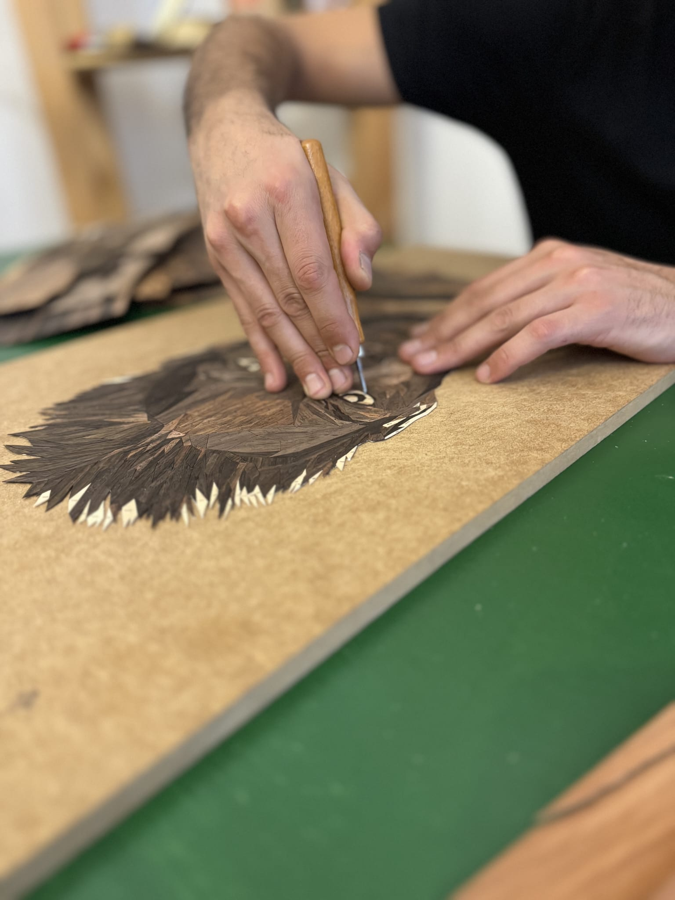
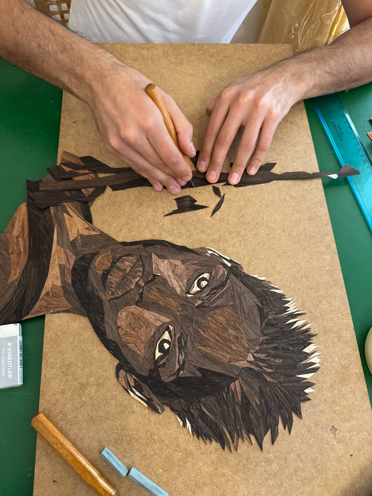
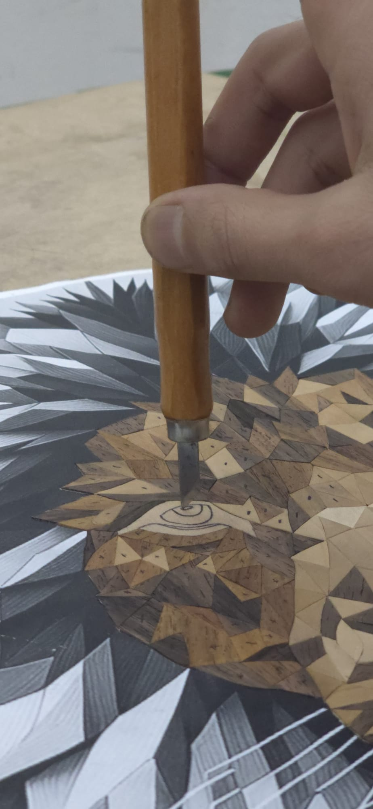
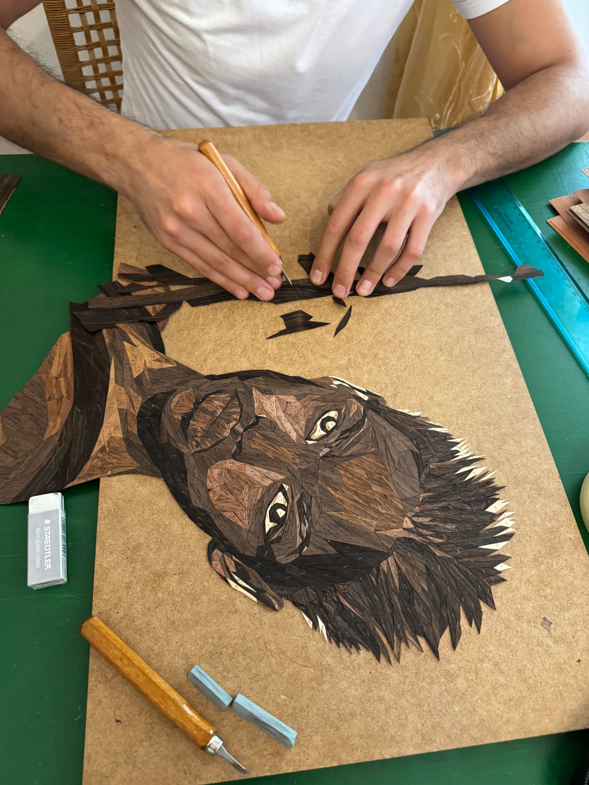
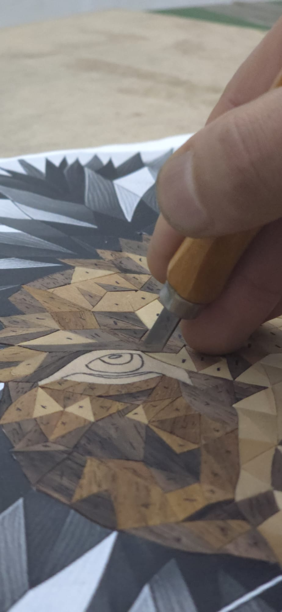
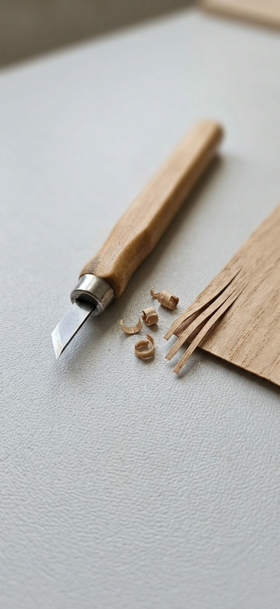
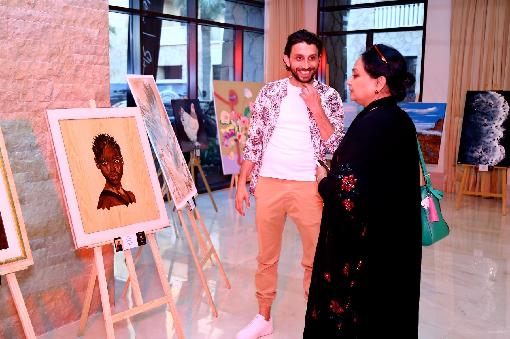
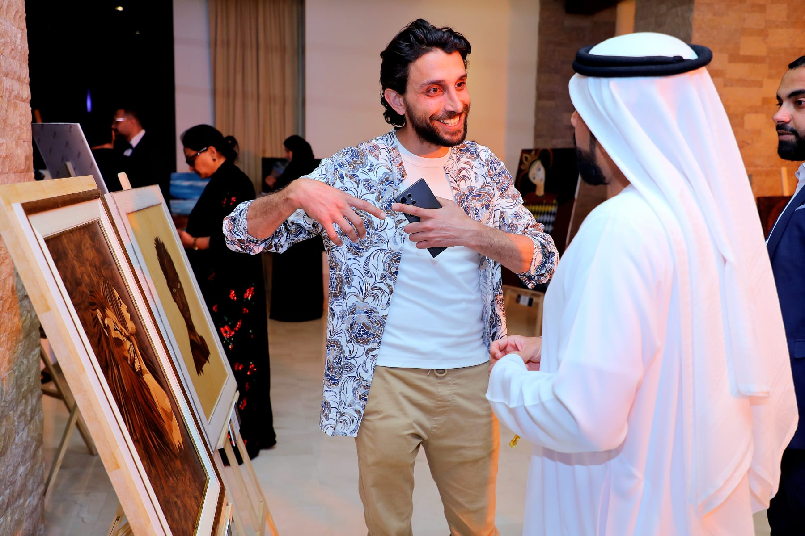
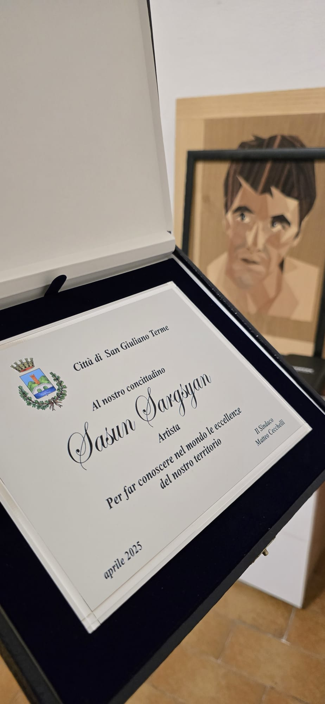

Sasun Sargsyan
San Giuliano Terme · Tuscany · Italy
Born 1991. Working since nine.
Origins
Sasun Sargsyan was born on 17 September 1991 in Yerevan, Armenia. At the age of nine, he began working with wood — not as a lesson, not as a school exercise, but because something in the material compelled him. The precision of it. The irreversibility of each cut. He kept working with it for the next twenty-five years.
Formation
He completed university education in Armenia and then built a real business — one that worked for several years, then didn't. The failure taught him what success doesn't: he learned to recognise what remains when everything provisional falls away. Throughout these years, the craft never stopped. It was never separate from who he was.
Italy
The conflict of 2020 in Arcax interrupted the life he had planned. He relocated to Tuscany in 2021 — arriving with a language he did not yet speak and a decision, made quietly, about what mattered. He built a business in Italy too. That one also taught him something when it closed.
Art as Vocation
By 2022, for the first time in his adult life, there was space for nothing but the work. What had begun at nine became his full professional identity. He built his first major portraits — not as a new discovery, but as a long preparation finally given room. By 2023 the work was being shown in Italy. By 2024 it reached Dubai.
Not a late start. A long preparation.
Now & Ahead
He works from a small studio in San Giuliano Terme, in the hills above Pisa. All cutting is done by hand. No laser. No template. No assistant. Each work in the collection took between four and six weeks to complete.
He is building toward a furniture atelier, pursuing entry into international craft competitions, and intends to exhibit in major galleries in the United Kingdom and internationally. Commissions are accepted by private inquiry and begin with a conversation.
“The wood already knows what it wants to be. My job is to listen to it.”
Sasun Sargsyan
What the hands know
Every cut is freehand. Every veneer is individually selected for grain direction, tone, and the way it holds light. Nothing is repeated and nothing is approximate.
Freehand cutting — no laser, no template

Each piece selected individually for grain and tone

Construction in progress — the portrait emerges piece by piece

Grain direction is not incidental — it is compositional

Reviewed under multiple light conditions before sealing

The tools: knife, mat, and patience
Wood as palette
No pigment. No paint. The entire tonal range — from pale ash highlights to deep wenge shadow — is the natural colour of the wood itself. What you see is the material.
- Purpose
- Show the authentic, handmade material process
- Recommended
- 16:10 · 1600×1000px
- Status
- Awaiting real studio photography
Veneer selection — each species carries its own light
- Purpose
- Show the authentic, handmade material process
- Recommended
- 16:10 · 1600×1000px
- Status
- Awaiting real studio photography
The tonal palette is entirely natural — ash to wenge


World Art Dubai, Dubai World Trade Centre · March 2024 — See all exhibitions →
Recognised by the community
The work of VaCa Marquetry has been formally recognised by the Municipality of San Giuliano Terme for its contribution to Italian cultural and artistic life. For exhibition records, see the Exhibitions page.

Municipal Recognition
San Giuliano Terme, Italy
The Municipality of San Giuliano Terme, Pisa — the community where VaCa Marquetry works — formally recognised the studio's contribution to Italian cultural and artistic life. A recognition of the work, and of the place it has made for itself.
Packaging & Delivery
Every original leaves the studio in bespoke protective packaging, suitable for international white-glove courier. The presentation is part of the experience of acquiring a VaCa Marquetry work.
- Purpose
- Show how an original is protected for international delivery
- Recommended
- 4:3 · 1600×1200px
- Status
- Awaiting photography
- Purpose
- Show the presentation a collector receives
- Recommended
- 4:3 · 1600×1200px
- Status
- Awaiting photography
A Portrait Made
Entirely for You
Each commission begins with a conversation. A free preview is provided within 24 hours, with no commitment required.
Begin a Custom Portrait